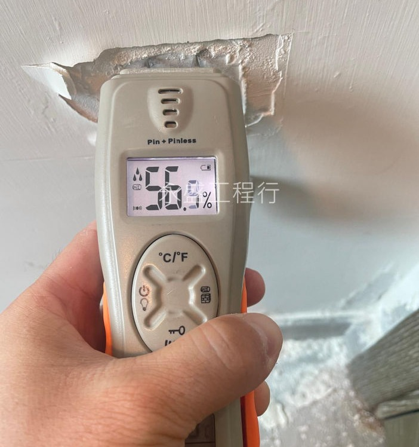
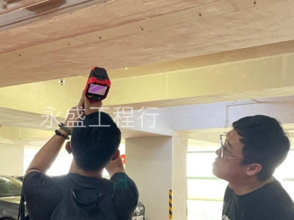

WING SHING ENGINEERING CO.
永盛工程行
公司簡介
服務範疇
天台防水工程
浴室防水工程
打針灌漿防水工程
外牆防水工程
石屎維修工程
專業防水工程檢測
防水工程案例
天台防水工程
浴室防水工程
打針灌漿防水工程
外牆防水工程
石屎維修工程
專業防水工程檢測
防水資訊
滲漏原因與攻略
漏水應急指南
檢測技術你要知
聯絡我們
家庭漏水應急指南：
你一定要知道的快速應對和漏水修復方法
生活中最糟心的事情之一莫過於家中突如其來的漏水問題。從天花板滴落的水珠到地板上的水漬，每一處漏水都可能導致家具受損、電器短路，甚至對建築結構造成長期影響。這篇文章將為你提供一個詳細的家庭漏水應急指南，幫助你在面對漏水時，能夠迅速應對並有效修復，將損失降到最低。
第一時間應急措施: 當發現家中漏水時，最重要的是迅速採取應急措施，防止事態惡化。
關閉水源：
立即關閉家中的主要水閥，以防止水流繼續蔓延。
清理積水：
使用拖把、毛巾或吸水機迅速清理漏水區域的積水，防止水進一步滲入地板或牆壁。
斷開電源：
確保漏水區域的電源已被切斷，防止漏水導致的短路和電擊事故。
保護家具：
將易受水損的家具和電器移到安全的地方，或者用防水布覆蓋保護。

永盛工程行師傅正在排查漏水位置。
____________________________________
漏水原因的排查: 在應急措施之後，下一步就是找出漏水的原因。不同位置的漏水原因可能有所不同。
屋頂：
檢查屋頂瓦片或防水層是否破損，特別是接縫處。
浴室：
檢查浴缸、淋浴間、馬桶底座的防水層是否完好。
地板：
檢查地板縫隙和接縫處是否有滲水跡象。
窗戶：
檢查窗框和玻璃周圍的密封條是否老化或損壞。
保護家具：
檢查鋅盤、水龍頭和排水管道的接頭是否漏水。
喉管：
檢查水喉和排水管道的接頭、龍頭、閥門是否有漏水現象。
常見漏水問題的修復方法
屋頂漏水
更換瓦片或修補防水層：如果瓦片破損，需要更換新瓦片；如果防水層損壞，需要重造防水層損。
清理排水溝：確保排水溝暢通，避免積水滲入屋頂。
窗戶漏水
更換密封條：如果密封條老化，需要更換新的密封條。
加強密封：使用防水膠加強窗框和玻璃周圍的密封。
管道漏水
更換損壞的管道或接頭：如果管道或接頭損壞，需要及時更換。加強接頭密封：使用防水膠或密封帶加強接頭處的密封。
浴室漏水
重新做防水層：如果防水層損壞，需要重新做防水層，特別是接縫處和邊角處。
檢查排水系統：確保排水系統暢通，防止水分積聚。
廚房漏水
更換密封件：檢查並更換水槽、水龍頭和排水管道的密封件。
加強接頭密封：使用防水膠或密封帶加強接頭處的密封。
牆壁漏水
修補裂縫：使用防水材料填補牆壁裂縫，特別是接縫處。
加強牆壁防水層：在牆壁表面塗抹防水材料，增強防水效果。

清拆師傅正在打拆天台防水層。
____________________________________
漏水後的善後工作: 在修復完成後，還需進行一系列善後工作，確保不會留下隱患。
除濕防霉:
保持室內通風，幫助水分蒸發。使用除濕機：使用除濕機降低室內濕度，防止霉菌滋生。在修復區域使用防霉劑，防止霉菌生長。
檢查修復效果：
定期檢查修復區域，確保沒有再次漏水的跡象。對易漏水的部位進行定期維護和保養，延長防水層的使用壽命。
立即查詢防水工程報價
永盛工程行
WING SHING ENGINEERING COMPANY
地址：UNIT1, 7/F, BLK D, MAI WAH IND BLDG, KWAI CHUNG
電話：
9856 8540
｜
WhatsApp
電郵：
wsenghk@gmail.com
網址：
wsenghk.com
AI Website Software